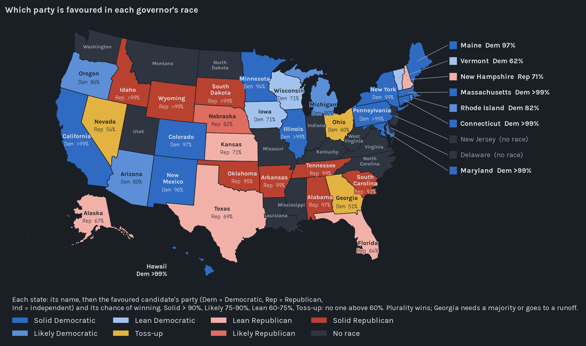
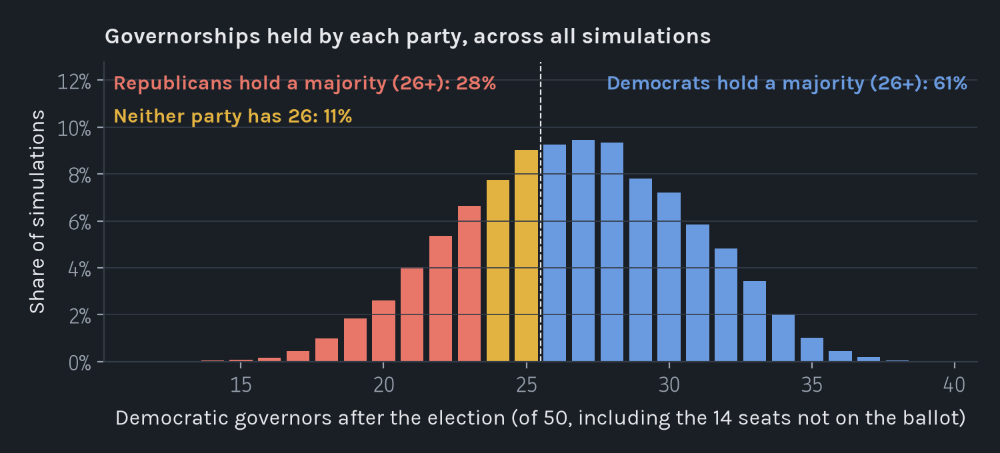
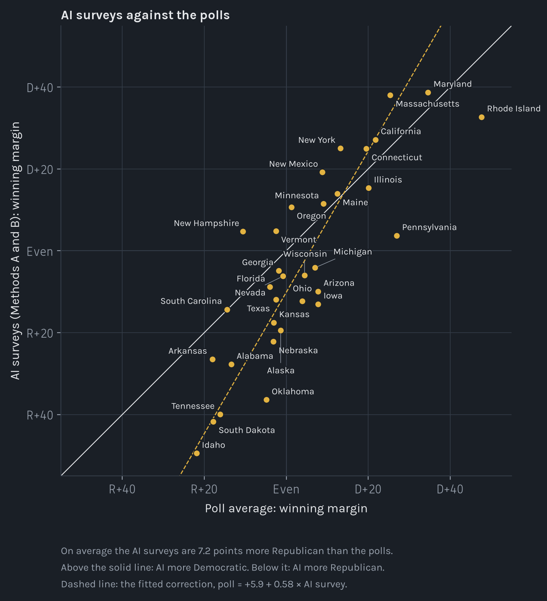
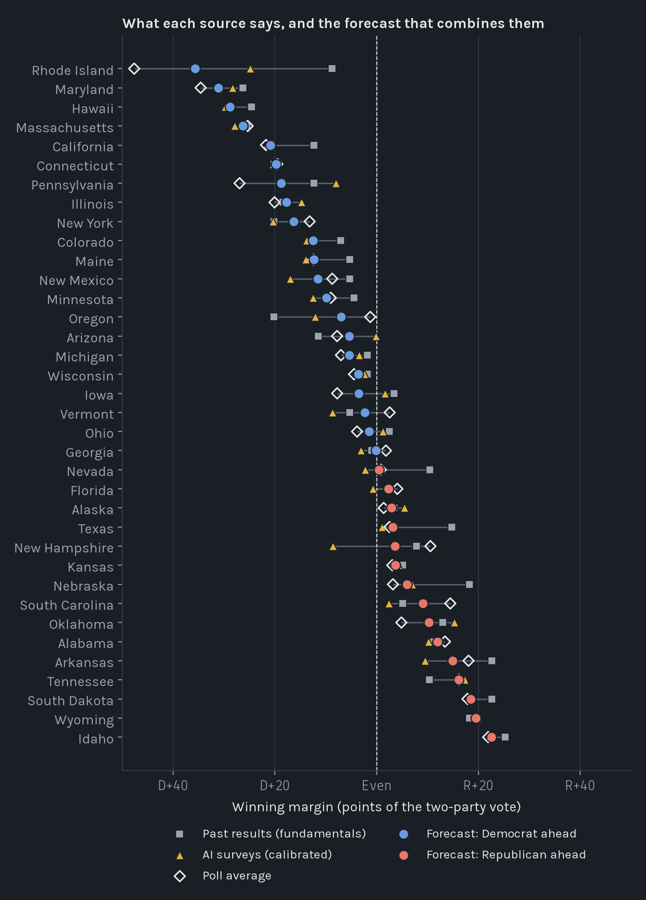
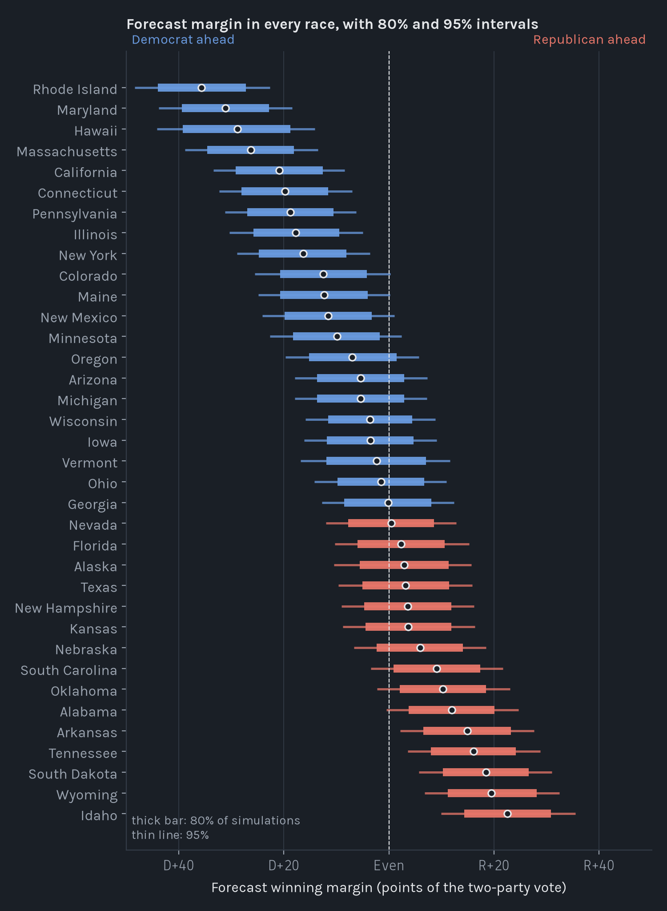

Every number on this page starts from synthetic survey answers: three language models answering as 3,600 real respondents to the Cooperative Election Study. We combine those answers with published polls and past results, then simulate the election 10,000 times.
Updated 30 October 2026, 7:17 PM Toronto time. The models are asked again every day until 1 November.
Democratic governors not up this year Republican governors not up this year
27 Democratic governors after the election, median of 10,000 simulations (80% range 21 to 32)
61% chance Democrats hold 26 or more of the 50 governorships
28% chance Republicans hold 26 or more
Each row represents one of the 36 governor races ordered from the closest to the safest. A dot on the left favours the democrat while a dot on the right favours the Republican. The farther the dot is from the centre safer the race is for that party. The percentage shows the favoured candidate chance of winning not their share of the vote. Ratings are classified as Toss-up, Lean, Likely or Solid based on the candidates chance of winning. You can filter races by rating, search for a state or select the plus sign to view candidates and estimates from each source.
The current forecast has 12 Solid Democratic races, 4 Likely Democratic races, 3 Lean Democratic races, 3 Toss-ups, 5 Lean Republican races, 1 Likely Republican race and 8 Solid Republican races. Georgia, Nevada and Ohio are the three Toss-ups.
The layout of this strip is adapted from the Decision Desk HQ governor ratings page.


Fourteen governors are not up for election this year, including six Democrats and eight Republicans. These are shown as empty squares in the bar at the top of the page. Democrats need to win 20 of the 36 contested races to reach 26 governorships, while Republicans need 18. The forecast gives Democrats a median of 27 governorships, with an 80% range of 21 to 32. Democrats have a 61% chance of holding a majority, compared with 28% for Republicans. In about 10% of simulations, neither party reaches a majority. The results vary because a national swing can affect many states at the same time.
| State | Democrat | Republican | Independent | Rating | Democratic win | Republican win | Independent win | Margin | 80% range | Polls |
|---|---|---|---|---|---|---|---|---|---|---|
| Georgia | Keisha Lance Bottoms | Rick Jackson | Toss‑up | 51% | 49% | D+0.1 | R+8.1 to D+8.5 | 10 | ||
| Nevada | Aaron Ford | Joe Lombardo | Toss‑up | 47% | 53% | R+0.5 | R+8.6 to D+7.7 | 3 | ||
| Ohio | Amy Acton | Vivek Ramaswamy | Toss‑up | 59% | 41% | D+1.5 | R+6.7 to D+9.8 | 16 | ||
| Vermont | Amanda Janoo | Phil Scott | Lean D | 62% | 38% | D+2.4 | R+7.0 to D+11.9 | 3 | ||
| Florida | David Jolly | Byron Donalds | Lean R | 36% | 64% | R+2.3 | R+10.6 to D+6.0 | 17 | ||
| Alaska | Jonathan Kreiss-Tomkins | Dave Bronson / Treg Taylor / Bernadette Wilson | Lean R | 33% | 67% | R+2.9 | R+11.4 to D+5.6 | 7 | ||
| Texas | Gina Hinojosa | Greg Abbott | Lean R | 31% | 69% | R+3.2 | R+11.5 to D+5.1 | 35 | ||
| Iowa | Rob Sand | Zach Lahn | Lean D | 71% | 29% | D+3.6 | R+4.7 to D+11.9 | 17 | ||
| Kansas | Cindy Holscher | Ty Masterson | Lean R | 29% | 71% | R+3.7 | R+11.9 to D+4.5 | 7 | ||
| New Hampshire | Cinde Warmington | Kelly Ayotte | Lean R | 29% | 71% | R+3.6 | R+11.9 to D+4.7 | 9 | ||
| Wisconsin | David Crowley | Tom Tiffany | Lean D | 71% | 29% | D+3.6 | R+4.5 to D+11.6 | 7 | ||
| Michigan | Jocelyn Benson | John James | Likely D | 80% | 20% | D+5.4 | R+2.9 to D+13.6 | 21 | ||
| Arizona | Katie Hobbs | Andy Biggs | Likely D | 80% | 20% | D+5.4 | R+2.9 to D+13.7 | 13 | ||
| Rhode Island | Helena Foulkes | Aaron Guckian | Ken Block | Likely D | 82% | <1% | 18% | D+35.7 | D+27.2 to D+44.0 | 6 |
| Nebraska | Lynne Walz | Jim Pillen | Rick Beard / Brett Lindstrom | Likely R | 18% | 82% | <1% | R+5.9 | R+14.1 to D+2.4 | 9 |
| Oregon | Tina Kotek | Christine Drazan | Likely D | 86% | 14% | D+7.0 | R+1.4 to D+15.2 | 4 | ||
| South Carolina | Jermaine Johnson | Alan Wilson | Solid R | 8% | 92% | R+9.1 | R+17.4 to R+0.9 | 4 | ||
| Minnesota | Amy Klobuchar | Lisa Demuth | Solid D | 94% | 6% | D+9.9 | D+1.8 to D+18.2 | 7 | ||
| Oklahoma | Cyndi Munson | Mike Mazzei | Solid R | 5% | 95% | R+10.3 | R+18.5 to R+2.0 | 3 | ||
| New Mexico | Deb Haaland | Gregg Hull | Solid D | 96% | 4% | D+11.6 | D+3.2 to D+19.9 | 4 | ||
| Alabama | Doug Jones | Tommy Tuberville | Solid R | 3% | 97% | R+11.9 | R+20.1 to R+3.7 | 3 | ||
| Colorado | Phil Weiser | Victor Marx | Solid D | 97% | 3% | D+12.5 | D+4.2 to D+20.7 | 0 | ||
| Maine | Hannah Pingree | Robert B. Charles | Rick Bennett | Solid D | 97% | 3% | <1% | D+12.3 | D+4.1 to D+20.7 | 13 |
| Arkansas | Fredrick Love | Sarah Huckabee Sanders | Colt Shelby | Solid R | 1% | 99% | <1% | R+14.9 | R+23.2 to R+6.6 | 2 |
| Tennessee | Jerri Green | Marsha Blackburn | Solid R | 1% | 99% | R+16.1 | R+24.2 to R+8.0 | 3 | ||
| New York | Kathy Hochul | Bruce Blakeman | Solid D | 99% | 1% | D+16.3 | D+8.1 to D+24.8 | 12 | ||
| Illinois | JB Pritzker | Darren Bailey | Solid D | >99% | <1% | D+17.7 | D+9.4 to D+25.8 | 2 | ||
| South Dakota | Dan Ahlers | Larry Rhoden | Solid R | <1% | >99% | R+18.5 | R+26.6 to R+10.3 | 2 | ||
| Pennsylvania | Josh Shapiro | Stacy Garrity | Solid D | >99% | <1% | D+18.8 | D+10.6 to D+27.0 | 11 | ||
| Connecticut | Ned Lamont | Ryan Fazio | Solid D | >99% | <1% | D+19.8 | D+11.6 to D+28.0 | 9 | ||
| Wyoming | Kenneth Casner | Eric Barlow | Solid R | <1% | >99% | R+19.5 | R+28.1 to R+11.2 | 0 | ||
| California | Xavier Becerra | Steve Hilton | Solid D | >99% | <1% | D+20.9 | D+12.6 to D+29.2 | 11 | ||
| Idaho | Terri Pickens | Brad Little | John Stegner | Solid R | <1% | >99% | <1% | R+22.6 | R+30.8 to R+14.3 | 2 |
| Massachusetts | Maura Healey | Mike Minogue | Solid D | >99% | <1% | D+26.3 | D+18.1 to D+34.6 | 6 | ||
| Hawaii | Josh Green | Gary Cordery | Solid D | >99% | <1% | D+28.8 | D+18.8 to D+39.2 | 0 | ||
| Maryland | Wes Moore | Dan Cox | Solid D | >99% | <1% | D+31.1 | D+22.8 to D+39.4 | 2 |
AI surveys and polls generally agree on which states favour each party but they often differ on size of the lead. Across 33 states with polling data their estimates have a correlation of 0.85 and agree on the leading party in 26 states. Overall the AI estimates are about 7.2% points more Republican than the polls.
The differences are particularly large in Oklahoma, Idaho, Tennessee and South Dakota where the AI is much more Republican than the polls. New Hampshire shows the opposite pattern with the AI favouring the Democrat while the polls favour the Republican. We correct these differences before using the AI estimates in the forecast and give more weight to polls where they are available.


We also asked the same models to act as forecasters. Their answers are shown here for comparison and are not used in the forecast.
| State | Past results | AI surveys (uncalibrated) | Method C | Polls | Forecast | |
|---|---|---|---|---|---|---|
| Method A | Method B | |||||
| Georgia | D+1.0 | R+5.1 | R+4.6 | R+6.3 | R+1.8 | D+0.1 |
| Nevada | R+10.4 | R+6.2 | R+6.2 | R+3.5 | R+0.8 | R+0.5 |
| Ohio | R+2.5 | R+12.5 | R+12.1 | R+11.4 | D+3.9 | D+1.5 |
| Vermont | D+5.3 | D+3.3 | D+6.4 | R+27.8 | R+2.5 | D+2.4 |
| Florida | R+2.5 | R+6.9 | R+10.8 | R+12.8 | R+4.0 | R+2.3 |
| Alaska | R+3.4 | R+12.7 | R+26.3 | R+19.3 | R+1.4 | R+2.9 |
| Texas | R+14.8 | R+8.7 | R+15.2 | R+13.5 | R+2.5 | R+3.2 |
| Iowa | R+3.4 | R+13.3 | R+12.7 | R+5.9 | D+7.8 | D+3.6 |
| Kansas | R+5.1 | R+16.3 | R+18.8 | R+12.7 | R+3.1 | R+3.7 |
| New Hampshire | R+7.8 | D+5.5 | D+3.9 | R+4.7 | R+10.6 | R+3.6 |
| Wisconsin | D+1.8 | R+4.8 | R+7.3 | D+0.5 | D+4.5 | D+3.6 |
| Michigan | D+1.8 | R+4.0 | R+4.3 | D+0.4 | D+7.0 | D+5.4 |
| Arizona | D+11.5 | R+8.1 | R+11.7 | R+0.4 | D+7.8 | D+5.4 |
| Rhode Island | D+8.8 | D+37.1 | D+28.3 | D+18.4 | D+47.7 | D+35.7 |
| Nebraska | R+18.3 | R+22.5 | R+21.9 | R+26.8 | R+3.2 | R+5.9 |
| Oregon | D+20.2 | D+11.6 | D+9.8 | D+6.6 | D+1.3 | D+7.0 |
| South Carolina | R+5.1 | R+11.2 | R+17.5 | R+18.1 | R+14.5 | R+9.1 |
| Minnesota | D+4.5 | D+13.9 | D+9.0 | D+13.6 | D+9.0 | D+9.9 |
| Oklahoma | R+13.0 | R+37.8 | R+35.1 | R+26.2 | R+4.8 | R+10.3 |
| New Mexico | D+5.3 | D+22.1 | D+16.3 | D+9.3 | D+8.7 | D+11.6 |
| Alabama | R+11.2 | R+29.7 | R+25.7 | R+23.8 | R+13.4 | R+11.9 |
| Colorado | D+7.1 | D+15.8 | D+11.3 | D+9.6 | D+12.5 | |
| Maine | D+5.3 | D+16.2 | D+11.7 | D+6.6 | D+12.4 | D+12.3 |
| Arkansas | R+22.6 | R+24.2 | R+28.8 | R+26.5 | R+18.0 | R+14.9 |
| Tennessee | R+10.4 | R+43.6 | R+36.3 | R+28.8 | R+16.1 | R+16.1 |
| New York | D+20.2 | D+29.8 | D+20.2 | D+11.2 | D+13.2 | D+16.3 |
| Illinois | D+18.5 | D+18.8 | D+11.9 | D+12.1 | D+20.1 | D+17.7 |
| South Dakota | R+22.6 | R+44.6 | R+38.8 | R+30.0 | R+17.8 | R+18.5 |
| Pennsylvania | D+12.4 | D+4.3 | D+3.1 | D+8.5 | D+27.0 | D+18.8 |
| Connecticut | D+20.2 | D+30.2 | D+19.7 | D+12.2 | D+19.5 | D+19.8 |
| Wyoming | R+18.2 | R+41.6 | R+47.1 | R+42.3 | R+19.5 | |
| California | D+12.3 | D+29.2 | D+25.1 | D+17.7 | D+21.8 | D+20.9 |
| Idaho | R+25.2 | R+46.8 | R+52.2 | R+36.7 | R+21.9 | R+22.6 |
| Massachusetts | D+25.4 | D+40.8 | D+35.3 | D+21.5 | D+25.4 | D+26.3 |
| Hawaii | D+24.6 | D+50.1 | D+32.3 | D+29.4 | D+28.8 | |
| Maryland | D+26.3 | D+43.3 | D+34.1 | D+23.6 | D+34.6 | D+31.1 |
We create 3,600 voter personas based on Cooperative Election Study respondents with 100 personas sampled for each state. Three language models answer survey questions as these personas or as groups of them. We adjust their responses to better represent each states voters and correct the estimates using available polls. We then combine the corrected AI estimates with polls and historical election results. Finally we simulate the election 10,000 times to explore possible outcomes. The sections below explain each step.
The data come from the Cooperative Election Study (Schaffner et al. 2025, 2026), the polls listed on Wikipedia, and past governor results.
| State | Polls | Likely voters | Latest fieldwork | Poll average |
|---|---|---|---|---|
| Texas | 35 | 89% | 21 Oct | R+2.5 |
| Michigan | 21 | 86% | 18 Oct | D+7.0 |
| Iowa | 17 | 94% | 19 Oct | D+7.8 |
| Florida | 17 | 94% | 20 Oct | R+4.0 |
| Ohio | 16 | 88% | 20 Oct | D+3.9 |
| Maine | 13 | 85% | 20 Oct | D+12.4 |
| Arizona | 13 | 85% | 20 Oct | D+7.8 |
| New York | 12 | 83% | 23 Oct | D+13.2 |
| Pennsylvania | 11 | 55% | 21 Oct | D+27.0 |
| California | 11 | 100% | 20 Oct | D+21.8 |
| Georgia | 10 | 100% | 20 Oct | R+1.8 |
| New Hampshire | 9 | 100% | 20 Oct | R+10.6 |
| Nebraska | 9 | 67% | 18 Oct | R+3.2 |
| Connecticut | 9 | 78% | 12 Oct | D+19.5 |
| Wisconsin | 7 | 86% | 9 Oct | D+4.5 |
| Minnesota | 7 | 86% | 12 Oct | D+9.0 |
| Kansas | 7 | 100% | 21 Oct | R+3.1 |
| Alaska | 7 | 100% | 18 Oct | R+1.4 |
| Massachusetts | 6 | 67% | 18 Oct | D+25.4 |
| Rhode Island | 6 | 100% | 11 Oct | D+47.7 |
| South Carolina | 4 | 50% | 18 Oct | R+14.5 |
| New Mexico | 4 | 75% | 9 Oct | D+8.7 |
| Oregon | 4 | 100% | 4 Oct | D+1.3 |
| Alabama | 3 | 67% | 17 Oct | R+13.4 |
| Nevada | 3 | 100% | 13 Oct | R+0.8 |
| Oklahoma | 3 | 100% | 13 Oct | R+4.8 |
| Tennessee | 3 | 100% | 15 Oct | R+16.1 |
| Vermont | 3 | 100% | 4 Oct | R+2.5 |
| Idaho | 2 | 50% | 22 Oct | R+21.9 |
| Maryland | 2 | 100% | 27 Sep | D+34.6 |
| Illinois | 2 | 100% | 22 Oct | D+20.1 |
| Arkansas | 2 | 100% | 13 Oct | R+18.0 |
| South Dakota | 2 | 100% | 14 Oct | R+17.8 |
Each state’s AI survey uses 100 personas built from real survey respondents, weighted to match the state’s voters.
| Personas | Weighted frame | Difference | |
|---|---|---|---|
| Party | |||
| Democrats (incl. leaners) | 44% | 43% | +1 pts |
| Independents | 15% | 12% | +3 pts |
| Republicans (incl. leaners) | 40% | 45% | −4 pts |
| Age | |||
| 18-29 | 14% | 13% | +1 pts |
| 30-44 | 23% | 23% | −1 pts |
| 45-64 | 33% | 34% | −1 pts |
| 65+ | 30% | 30% | 0 pts |
| Education | |||
| Four-year degree | 40% | 40% | 0 pts |
| No four-year degree | 60% | 60% | 0 pts |
| State | CES respondents | Effective sample | Weighted share of registered voters | By survey year | |||
|---|---|---|---|---|---|---|---|
| Democrats | Independents | Republicans | Republican, 2024 survey | Republican, 2025 survey | |||
| Alaska | 141 | 47 | 31% | 21% | 49% | 48% | 53% |
| Wyoming | 101 | 51 | 26% | 6% | 68% | 71% | 56% |
| Vermont | 139 | 84 | 58% | 16% | 25% | 25% | 25% |
| Idaho | 348 | 112 | 22% | 14% | 64% | 64% | 65% |
| Hawaii | 221 | 123 | 50% | 20% | 29% | 29% | 30% |
| South Dakota | 201 | 135 | 26% | 13% | 61% | 57% | 74% |
| Rhode Island | 233 | 154 | 51% | 22% | 27% | 28% | 20% |
| Nebraska | 397 | 187 | 37% | 10% | 54% | 55% | 50% |
| New Hampshire | 324 | 224 | 50% | 14% | 37% | 34% | 51% |
| Maine | 337 | 226 | 46% | 14% | 39% | 40% | 33% |
| New Mexico | 490 | 240 | 52% | 13% | 35% | 37% | 26% |
| Arkansas | 554 | 243 | 34% | 11% | 55% | 60% | 32% |
| Nevada | 848 | 266 | 44% | 14% | 42% | 43% | 38% |
| Kansas | 554 | 289 | 35% | 16% | 49% | 52% | 38% |
| Iowa | 714 | 317 | 38% | 12% | 50% | 50% | 47% |
| Connecticut | 689 | 385 | 53% | 14% | 33% | 34% | 29% |
| Oklahoma | 777 | 386 | 29% | 9% | 62% | 63% | 58% |
| Alabama | 1,053 | 490 | 34% | 11% | 55% | 56% | 52% |
| South Carolina | 1,147 | 524 | 40% | 9% | 51% | 50% | 53% |
| Colorado | 1,259 | 569 | 47% | 14% | 39% | 41% | 32% |
| Tennessee | 1,528 | 589 | 29% | 10% | 61% | 63% | 54% |
| Arizona | 1,739 | 599 | 38% | 11% | 50% | 51% | 48% |
| Oregon | 1,225 | 636 | 50% | 12% | 38% | 38% | 36% |
| Minnesota | 1,203 | 637 | 48% | 11% | 41% | 40% | 41% |
| Massachusetts | 1,273 | 659 | 59% | 13% | 27% | 28% | 26% |
| Maryland | 1,255 | 679 | 59% | 13% | 28% | 28% | 27% |
| Wisconsin | 1,499 | 726 | 42% | 10% | 47% | 47% | 50% |
| Georgia | 2,423 | 939 | 44% | 10% | 46% | 48% | 39% |
| Michigan | 2,332 | 1,145 | 44% | 12% | 45% | 45% | 44% |
| Ohio | 2,841 | 1,358 | 40% | 9% | 51% | 52% | 49% |
| Illinois | 2,677 | 1,423 | 51% | 11% | 38% | 39% | 34% |
| Florida | 5,194 | 1,722 | 42% | 10% | 49% | 49% | 49% |
| Pennsylvania | 3,507 | 1,862 | 47% | 7% | 46% | 46% | 47% |
| New York | 4,132 | 1,927 | 57% | 11% | 32% | 32% | 33% |
| Texas | 5,454 | 2,532 | 40% | 11% | 49% | 50% | 48% |
| California | 5,955 | 2,708 | 57% | 11% | 32% | 32% | 31% |
Three language models from three companies answered as each persona.
| Model | OpenRouter identifier | Host | Reasoning | Temperature | Answers | Usable |
|---|---|---|---|---|---|---|
| GPT-6 Luna (OpenAI) | openai/gpt-6-luna | openai | minimal | provider default | 19,876 | 99.8% |
| DeepSeek V4.1 Flash | deepseek/deepseek-v4.1-flash | deepinfra/fp8 | none | 1 | 19,836 | 100.0% |
| Mistral Small 24B | mistralai/mistral-small-24b-instruct-2501 | deepinfra/fp8 | not offered | 1 | 19,864 | 99.8% |
System message
You are taking part in a public opinion survey. You will be given a description of a person. Answer every question as that person would, based on their background, values and circumstances. Do not answer as an AI assistant, do not add commentary, and do not refuse. Reply only with valid JSON in the exact format requested.
Question
You are a 63-year-old man who lives in Michigan. You describe your race/ethnicity as White. Your highest level of education is some college, and your family income is $10,000 to $19,999. In politics, you consider yourself a strong Democrat and your views are very liberal. You are registered to vote.
The 2026 general election for Governor of Michigan is on Tuesday,
November 3. The candidates are:
- Jocelyn Benson (Democratic Party)
- John James (Republican Party)
Question 1. How likely are you to vote in this election?
Options: "Definitely will vote", "Probably will vote",
"Unlikely to vote", "Will not vote"
Question 2. If the election were held today, who would you vote for
for Governor?
Options: "Jocelyn Benson", "John James", "Other", "Don't know"
Question 3. In the election for the U.S. House of Representatives in your
district, which party's candidate would you vote for?
Options: "The Democratic Party candidate", "The Republican Party
candidate", "Other", "Don't know"
Reply in this JSON format:
{"turnout": "<one option>", "governor_vote": "<one option>",
"house_vote": "<one option>"}GPT-6 Luna (OpenAI) replied
{"turnout":"Definitely will vote","governor_vote":"Jocelyn Benson","house_vote":"The Democratic Party candidate"}
| Democrat | Republican | Independent or third party | Other | Don't know | Unusable | Total | |
|---|---|---|---|---|---|---|---|
| DeepSeek V4.1 Flash | 5,248 | 4,902 | 57 | 0 | 592 | 1 | 10,800 |
| GPT-6 Luna (OpenAI) | 5,282 | 4,713 | 57 | 0 | 748 | 0 | 10,800 |
| Mistral Small 24B | 5,242 | 4,701 | 56 | 26 | 769 | 6 | 10,800 |
| All models | 15,772 | 14,316 | 170 | 26 | 2,109 | 7 | 32,400 |
| Model | Answers | Split ticket |
|---|---|---|
| DeepSeek V4.1 Flash | 10,102 | 0.9% |
| Mistral Small 24B | 9,777 | 1.4% |
| GPT-6 Luna (OpenAI) | 9,891 | 1.1% |
The corrected AI surveys, the polls and past results are blended and the election is simulated 10,000 times. We combined historical election results, polling data and AI survey estimates to produce the final forecast.
First we use a regression model to estimate the Democratic vote margin based on the states political lean, whether an incumbent was running and which party holds the presidency. The results suggested that an incumbent running for re-election benefits their party by around 11 percentage points. The president party faces a disadvantage of approximately 3.5 points during a midterm election. The coefficient for state political lean was 0.87.
| Term | Estimate | Standard error |
|---|---|---|
| Intercept | −1.64 | 1.35 |
| State lean (Cook PVI, per point) | 0.87 | 0.13 |
| Incumbent running (+1 D, -1 R) | 11.39 | 1.69 |
| President's party (+1 D, -1 R) | −3.49 | 1.32 |
Next we compared the AI survey results with polling averages. The raw AI estimates were around 7.2 percentage points more Republican than the polls.
Using data from the 33 states with available polls, we fitted the following relationship:
Poll estimate = 5.9 + 0.58 × AI survey estimate
The slope of 0.58 suggests that the AI models produced more extreme results than the polls. Their estimates tended to exaggerate the political lean of strongly Democratic and strongly Republican states.
We then combined the three sources based on their estimated precision. On average the polls received 55% of the weight, AI surveys received 33%, and historical results received 12%. These weights varied between states depending on the available data and the level of disagreement between estimates.
For example, in Vermont, the three models and two methods disagreed widely. As a result, the AI surveys received only 7% of the weight, while the three polls received 80%.
Finally, we simulated the election 10,000 times. Each simulation included a national swing shared across states and additional state-level uncertainty. The candidate with the most votes was considered the winner, subject to the rules of each states election.
Georgia was treated differently because a candidate needs more than 50% of the vote to avoid a runoff. In our simulations when no candidate received more than 50% of the vote we counted the race as going to a runoff. The winner we show for Georgia is the candidate leading the first round.
Our simulations estimated a 36% chance of a runoff. We also kept independent candidates separate from the major parties. In Rhode Island, Ken Block received approximately 34% support in the polls and won around 18% of the simulated elections.
We changed one detail of the prompt at a time to see whether the answers changed for the right reasons.
| Votes that changed | |||
|---|---|---|---|
| DeepSeek V4.1 Flash | Mistral Small 24B | GPT-6 Luna (OpenAI) | |
| Asked again, nothing changed | 3.9% | 4.7% | 3.9% |
| Asked which state they live in | 4.4% | 4.7% | 4.7% |
| House question removed | 3.1% | 5.3% | 4.2% |
| Incumbent label removed | 4.2% | 5.6% | 3.3% |
| Candidate order reversed | 5.6% | 7.2% | 4.2% |
| Party labels on candidates removed | 6.4% | 11.9% | 5.0% |
| Persona's own party removed | 16.1% | 19.7% | 19.7% |
The same questions are asked every day to see how much the answers move.
| Days | Spread within a day | Spread between days | |
|---|---|---|---|
| B: group split, margin | |||
| DeepSeek V4.1 Flash | 4 | 2.4 | 1.9 |
| Mistral Small 24B | 4 | 4.8 | 3.7 |
| GPT-6 Luna (OpenAI) | 4 | 1.5 | 1.2 |
| C: forecaster, Democratic share | |||
| DeepSeek V4.1 Flash | 4 | 1.3 | 0.8 |
| Mistral Small 24B | 4 | 2.3 | 1.5 |
| GPT-6 Luna (OpenAI) | 4 | 1.0 | 0.6 |
| Calls | Input tokens | Output tokens | Seconds per call | Cost (US$) | |
|---|---|---|---|---|---|
| A: each persona votes | |||||
| DeepSeek V4.1 Flash | 10,800 | 3,841,797 | 370,981 | 0.8 | $0.60 |
| Mistral Small 24B | 10,800 | 4,038,170 | 391,266 | 0.8 | $0.23 |
| GPT-6 Luna (OpenAI) | 10,840 | 3,829,116 | 783,080 | 1.9 | $0.77 |
| B: each group's split | |||||
| DeepSeek V4.1 Flash | 5,184 | 1,072,800 | 238,797 | 0.6 | $0.25 |
| Mistral Small 24B | 5,190 | 1,167,164 | 281,475 | 1.4 | $0.08 |
| GPT-6 Luna (OpenAI) | 5,184 | 1,087,200 | 1,013,271 | 3.5 | $0.62 |
| C: model as forecaster | |||||
| DeepSeek V4.1 Flash | 432 | 52,236 | 16,823 | 0.6 | $0.01 |
| Mistral Small 24B | 452 | 56,612 | 19,693 | 5.3 | <$0.01 |
| GPT-6 Luna (OpenAI) | 432 | 52,644 | 85,843 | 4.0 | $0.05 |
| Validation checks | |||||
| DeepSeek V4.1 Flash | 3,420 | 1,112,442 | 102,856 | 0.5 | $0.17 |
| Mistral Small 24B | 3,422 | 1,165,120 | 107,621 | 1.1 | $0.07 |
| GPT-6 Luna (OpenAI) | 3,420 | 1,113,547 | 223,463 | 1.9 | $0.22 |
| All methods and models | |||||
| Total | 59,576 | 18,588,848 | 3,635,169 | $3.08 | |
| Day | Run | Calls | Cost (US$) |
|---|---|---|---|
| 25 October | Full run on a laptop | 47,020 | $2.39 |
| 28 October | Daily GitHub Actions run | 4,196 | $0.23 |
| 29 October | Daily GitHub Actions run | 4,179 | $0.23 |
| 30 October | Daily GitHub Actions run | 4,181 | $0.23 |
We ran 10,000 election simulations to understand how much the results could vary. The 80% range covers the outcomes from 80% of the simulations, while the 95% range covers 95% of them.
A 60% chance of winning does not mean that a result is guaranteed. It means the candidate could still lose in about four out of ten simulations.
Our forecast gave Democrats a median of 27 governorships with an 80% range of 21 to 32. The range is quite wide because many races are competitive and a national shift in voter preferences can affect several states at once.

One important source of uncertainty is the national swing. We assumed a standard deviation of 4 percentage points. This accounts for the possibility that polls may overestimate or underestimate support across several states in the same direction. Such errors can make the final number of seats vary considerably between simulations.
We also included uncertainty for each data source. After calibration the AI surveys had an estimated standard deviation of around 6.4 points. Polling estimates had an error of at least five points, even when several polls were available. Historical results had a standard deviation of approximately 12.9 points making them the least precise source.
We tested the historical model on 107 previous elections that were not used to fit it. The model identified the correct winner in 87% of these races but its average error was around 13% points. Its Brier score was 0.11 compared with 0.25 for a simple 50–50 prediction. This suggests that historical results can help identify likely winners, although they are less reliable for predicting the exact vote margin.
There are several limitations to these estimates.
First all three AI models may share similar biases because their training data may contain overlapping information. Using different models does not guarantee that these shared biases will disappear.
Second, we calibrated the AI surveys against this year’s polls. If the polls are systematically wrong, the adjusted AI estimates may also be wrong.
Third, our synthetic voters were based on CES respondents from 2024 and 2025. Their views may not fully reflect changes in public opinion since then.
Colorado, Wyoming and Hawaii had no polling data in our dataset. Their forecasts depend more heavily on AI surveys and historical results, so their uncertainty may be greater than the model indicates.
The simulations also cannot account for events that happen after 1 November, such as late campaign developments, scandals or unexpected turnout changes.
Finally, turnout was estimated using the models predictions of whether people would definitely or probably vote. This is not the same as using a dedicated likely voter model.
Our forecast gave Democrats a median of 27 governorships. Democrats had a 61% chance of winning a majority compared with 28% for Republicans. There was also around a 10% chance that neither party would reach the 26 seats needed for a majority.
In the median simulation 6 governorships changed party.
Some races were much closer than others. Georgia was almost a coin flip with a 51% chance of a Democratic win and a 49% chance of a Republican win. Nevada had a 46% chance of a Democratic win while Ohio had a 60% chance.
Kansas and Iowa were the most likely states to change party with estimated probability of around 71% each. Vermont followed at 62% with Ohio and Georgia also among the potential flips.
Every number, table and chart on this page is made by the scripts in the repository, and its README lists the order to run them. The analysis uses Python (Van Rossum and Drake 2009) with pandas (McKinney 2010), NumPy (Harris et al. 2020), SciPy (Virtanen et al. 2020), Matplotlib (Hunter 2007), pandera (Bantilan 2020), great_tables (Iannone and Chow 2026), PyArrow (Apache Arrow developers 2016), Requests (Reitz 2011), HTTPX (Encode 2019), Beautiful Soup (Richardson 2004), pyreadstat (Fajardo 2018) and PyYAML (The YAML Project 2006), with packages managed by uv (Astral 2024); the page is built with Quarto (Allaire et al. 2022). The models were called through OpenRouter (OpenRouter 2026). Polls and candidates come from Wikipedia (Wikipedia contributors 2026), and the map uses US Census state outlines (U.S. Census Bureau 2018). The fonts Karla and Lekton are used under the SIL Open Font License.
| Setting | Value |
|---|---|
| Personas per state | 100, drawn in proportion to CES weight |
| Validation personas per state | 10 |
| Groups per state (Method B) | 24: party x age x degree |
| Repeats in the full run | 3 |
| Temperature | 1 (provider default for GPT-6 Luna) |
| Simulated elections | 10,000 |
| Random seed (forecast) | 853 |
| Shared national swing, SD | 4 points |
| Extra polling error, SD | 5 points |
| Polls used | 280, fieldwork ending on or after 2026-08-01 |